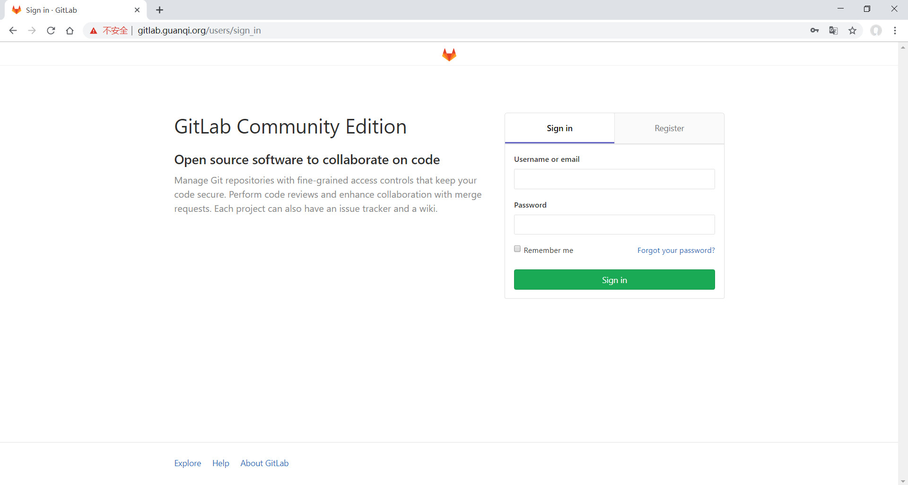
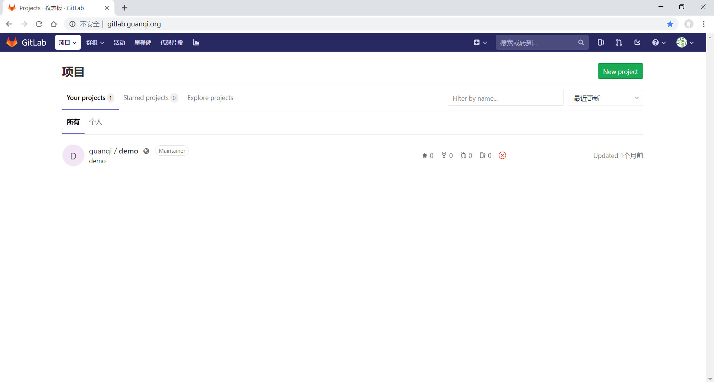

导语：今天介绍的是如何在Linux CentOS7系统中配置gitlab。记得我在工作过程中使用过别的公司搭建的内部代码平台，也是用的gitlab，所以我既然学了这个linux，自然要学会配置搭建一个gitlab平台，这是一件非常有意义的事情。
目录
- 环境准备
- 安装步骤
- 基本设置
- 网站预览
环境准备
- linux centos7系统
- ssh软件
- nginx服务器
- mysql数据库
安装步骤
安装前，请使用xshell连接远程服务器。
这次使用yum进行下载安装。
进入下载文件夹。
这里是你存放下载包的地方。
1 | cd /home/downloads |
- 第一步：安装依赖
1 | sudo yum install -y curl policycoreutils-python openssh-server |
如果你想支持邮件发送，请安装以下包：
1 | sudo yum install postfix |
- 第二步：安装gitlab包，ee是商业版，需付费；ce是社区版免费。
这里主要是体验，所以安装社区版即可。
1 | curl https://packages.gitlab.com/install/repositories/gitlab/gitlab-ce/script.rpm.sh | sudo bash |
基本设置
- 首先，修改默认url。
找到external_url修改为你需要的地址，我这里是git.example.com。
1 | sudo vi /etc/gitlab/gitlab.rb |
- 其次，重新启动。
1 | sudo gitlab-ctl reconfigure |
网站预览
在本地hosts文件中加入一条dns记录。
1 | 192.168.1.123 git.example.com; |
接下来在游览器输入git.example.com,就可以访问了。

我的gitlab
这是我写的一个demo仓库，并且上传至我搭建的gitlab平台。

我的gitlab
写在最后
非常激动人心的一刻，操练起来。